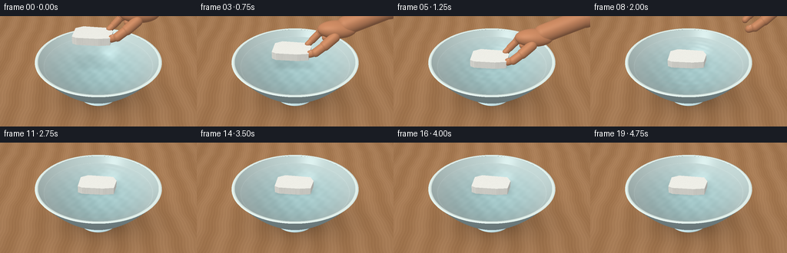
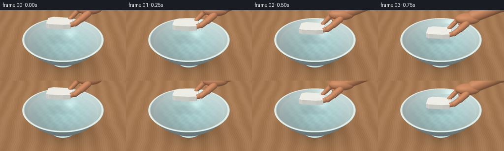

CODING AGENTS AS PIXEL WORLD MODELS
traex/GPT-6.1-Sol · mechanics_0014
点击播放 · 原生 RGB 像素
逐轮保存的候选
回放视频、检查图与代码变化。
每份候选均可单独播放。实际图片检查记录在下方工具轨迹中。
候选 01播放与检查图
点击播放 · 原生 RGB 像素


展开代码变化
--- 上一保存版本
+++ 本次保存版本
@@ -0,0 +1,336 @@
+from pathlib import Path
+import json
+import numpy as np
+from PIL import Image, ImageFilter
+import artifact_io
+
+ROOT=Path(__file__).resolve().parent
+SPEC=json.loads((ROOT/'task_spec.json').read_text())
+W,H=SPEC['width'],SPEC['height']
+S=3
+SW,SH=W*S,H*S
+rng=np.random.default_rng(423)
+
+def unit(v):
+ return v/np.maximum(np.linalg.norm(v,axis=-1,keepdims=True),1e-10)
+def smooth(a,b,x):
+ t=np.clip((x-a)/(b-a),0,1); return t*t*(3-2*t)
+
+# A fixed close-up camera, warm tabletop and large soft daylight source.
+CAM=np.array([0.,-6.6,5.4])
+TARGET=np.array([0.,0.,.68])
+forward=unit(TARGET-CAM); right=unit(np.cross(forward,[0,0,1])); up=np.cross(right,forward)
+y,x=np.mgrid[0:SH,0:SW]
+sx=(x+.5-SW*.5)/(SW)*4.85
+sy=-(y+.5-SH*.53)/(SW)*4.85
+D=unit(forward[None,None,:]+sx[...,None]*right/7.7+sy[...,None]*up/7.7).reshape(-1,3)
+O=np.broadcast_to(CAM,D.shape)
+NPIX=len(D)
+LIGHT=unit(np.array([-3.5,-4.3,7.]))
+
+
+def paraboloid(o,d,base,k,zmax):
+ a=k*(d[:,0]**2+d[:,1]**2)
+ b=2*k*(o[:,0]*d[:,0]+o[:,1]*d[:,1])-d[:,2]
+ c=base+k*(o[:,0]**2+o[:,1]**2)-o[:,2]
+ disc=b*b-4*a*c
+ root=np.sqrt(np.maximum(disc,0))
+ t1=(-b-root)/(2*a+1e-15); t2=(-b+root)/(2*a+1e-15)
+ out=np.full(len(d),np.inf)
+ for t in [t1,t2]:
+ zz=o[:,2]+t*d[:,2]
+ ok=(disc>=0)&(t>1e-5)&(zz>=base)&(zz<=zmax)
+ out=np.minimum(out,np.where(ok,t,np.inf))
+ p=o+np.where(np.isfinite(out),out,0)[:,None]*d
+ normal=unit(np.stack([-2*k*p[:,0],-2*k*p[:,1],np.ones(len(d))],-1))
+ return out,normal
+
+def plane(o,d,z,rmin=0,rmax=np.inf):
+ t=(z-o[:,2])/d[:,2]
+ p=o+t[:,None]*d
+ rr=np.sum(p[:,:2]**2,axis=1)
+ return np.where((t>0)&(rr>=rmin*rmin)&(rr<=rmax*rmax),t,np.inf)
+
+def ellipsoid(o,d,center,radii):
+ oc=(o-center)/radii; dd=d/radii
+ a=np.sum(dd*dd,1); b=np.sum(oc*dd,1); c=np.sum(oc*oc,1)-1
+ h=b*b-a*c; t=(-b-np.sqrt(np.maximum(h,0)))/a
+ good=(h>0)&(t>0)
+ p=o+t[:,None]*d
+ normal=unit((p-center)/(radii*radii))
+ return np.where(good,t,np.inf),normal
+
+def capsule(o,d,a,b,r):
+ # Exact ray / capsule intersection (cylinder plus spherical ends).
+ ba=b-a; oa=o-a
+ baba=np.dot(ba,ba); bard=d@ba; baoa=oa@ba
+ rdoa=np.sum(d*oa,1); oaoa=np.sum(oa*oa,1)
+ aa=baba-bard*bard; bb=baba*rdoa-baoa*bard
+ cc=baba*oaoa-baoa*baoa-r*r*baba
+ h=bb*bb-aa*cc
+ t=(-bb-np.sqrt(np.maximum(h,0)))/np.maximum(aa,1e-10)
+ yy=baoa+t*bard
+ ok=(h>=0)&(yy>0)&(yy<baba)&(t>0)
+ dist=np.where(ok,t,np.inf)
+ p=o+t[:,None]*d
+ n=unit(p-(a+np.clip(yy/baba,0,1)[:,None]*ba))
+ for center in [a,b]:
+ tc,nc=ellipsoid(o,d,center,np.full(3,r))
+ pick=tc<dist
+ dist=np.where(pick,tc,dist); n=np.where(pick[:,None],nc,n)
+ return dist,n
+
+def shade(p,n,d,material):
+ ndl=np.clip(n@LIGHT,0,1)
+ amb=.67+.16*n[:,2]
+ diffuse=amb+.29*ndl
+ half=unit(LIGHT-d)
+ spec=np.clip(np.sum(n*half,1),0,1)
+ if material=='wood':
+ grainx=p[:,0]+.035*np.sin(p[:,1]*2.7)+.014*np.sin(p[:,1]*9+p[:,0]*2)
+ grain=(np.sin(grainx*79+1.6*np.sin(p[:,1]*3.1))+ .45*np.sin(grainx*173+p[:,1]*2))
+ broad=np.sin(grainx*9+.3*np.sin(p[:,1]))
+ col=np.array([.61,.437,.288])[None,:]+grain[:,None]*np.array([.012,.011,.009])+broad[:,None]*.022
+ # Fine, restrained grain and the shadow resting under the bowl.
+ shadow=1-.24*np.exp(-((p[:,0]-.17)**2/1.85+(p[:,1]-.15)**2/1.07))
+ shadow*=1-.19*np.exp(-((p[:,0]-.07)**2/.36+(p[:,1]+.03)**2/.19))
+ col=col*diffuse[:,None]*shadow[:,None]
+ return col
+ if material=='outer':
+ base=np.array([.68,.785,.798])
+ variation=.007*np.sin(p[:,0]*109+p[:,2]*139)*np.sin(p[:,1]*93)
+ col=base*(diffuse[:,None]+variation[:,None])
+ # Glazed ceramic: a broad softbox sheen, no metallic reflection.
+ col+=.21*spec[:,None]**65+.032*spec[:,None]**8
+ return col
+ if material=='inner':
+ base=np.array([.77,.855,.847])
+ ao=.96-.12*np.clip(1-p[:,2]/1.22,0,1)
+ return base*diffuse[:,None]*ao[:,None]+.12*spec[:,None]**85
+ if material=='rim':
+ return np.array([.835,.895,.875])*diffuse[:,None]+.22*spec[:,None]**70
+ if material=='skin':
+ # Subtle skin color variation rather than a smooth plastic surface.
+ fine=np.sin(p[:,0]*290+p[:,1]*183)*np.sin(p[:,2]*230-p[:,1]*141)
+ base=np.array([.74,.485,.335])+fine[:,None]*.005
+ return base*(.64+.38*ndl[:,None]+.1*n[:,2,None])+.047*spec[:,None]**22
+ if material=='nail':
+ return np.array([.83,.64,.535])*(.77+.26*ndl[:,None])+.1*spec[:,None]**60
+ return np.ones_like(p)
+
+# Static scene: nested paraboloids form the thick open ceramic bowl.
+T=np.full(NPIX,np.inf); NORMAL=np.zeros((NPIX,3)); COLOR=np.zeros((NPIX,3)); ID=np.zeros(NPIX,int)
+
+def add_static(t,n,mat,ident):
+ global T,NORMAL,COLOR,ID
+ hit=t<T
+ if not np.any(hit): return
+ p=O[hit]+t[hit,None]*D[hit]
+ COLOR[hit]=shade(p,n[hit],D[hit],mat)
+ T[hit]=t[hit]; NORMAL[hit]=n[hit]; ID[hit]=ident
+
+ntop=np.broadcast_to([0.,0.,1.],D.shape)
+add_static(plane(O,D,0),ntop,'wood',1)
+t,n=paraboloid(O,D,.095,.46,1.215)
+add_static(t,-n,'outer',2)
+t,n=paraboloid(O,D,.216,.45,1.215)
+add_static(t,n,'inner',3)
+rt=plane(O,D,1.218,1.488,1.566)
+rp=O+np.where(np.isfinite(rt),rt,0)[:,None]*D
+rr=np.linalg.norm(rp[:,:2],axis=1)
+radial=(rr-1.526)/.040
+rn=unit(np.column_stack([rp[:,0]/np.maximum(rr,1e-8)*radial*.75,rp[:,1]/np.maximum(rr,1e-8)*radial*.75,np.ones(NPIX)]))
+add_static(rt,rn,'rim',4)
+# Discreet ceramic foot at the bottom.
+t,n=ellipsoid(O,D,np.array([0.,0.,.058]),np.array([.52,.52,.065]))
+add_static(t,n,'outer',2)
+
+WATER_Z=1.057
+wr=np.sqrt((WATER_Z-.216)/.45)
+WT=plane(O,D,WATER_Z,0,wr)
+WSEL=WT<T
+WP=O[WSEL]+WT[WSEL,None]*D[WSEL]
+WD=D[WSEL]
+
+# Deterministic irregular broken edge, with top and bottom parallel.
+poly=np.array([[-.47,-.255],[-.36,-.310],[.15,-.302],[.42,-.245],[.465,.095],[.37,.272],[-.28,.290],[-.46,.174]])
+# clockwise? the polygon above is counter-clockwise.
+foam_rng=np.random.default_rng(1234)
+beads=foam_rng.uniform([-.49,-.33],[.49,.32],(1050,2))
+bead_radius=foam_rng.uniform(.009,.022,1050)
+# A dense regular jittered bead mosaic evaluated as a local Voronoi pattern.
+
+def foam_trace(o,d,center,angle):
+ cs,sn=np.cos(angle),np.sin(angle)
+ rot=np.array([[cs,-sn,0],[sn,cs,0],[0,0,1.]])
+ oo=(o-center)@rot; dd=d@rot
+ lo=np.full(len(d),-np.inf); hi=np.full(len(d),np.inf)
+ normals=np.zeros((len(d),3))
+ # z thickness plus vertical fracture walls, forming a closed convex prism.
+ planes=[(np.array([0.,0.,1.]),.112),(np.array([0.,0.,-1.]),.075)]
+ for i in range(len(poly)):
+ a=poly[i]; b=poly[(i+1)%len(poly)]
+ edge=b-a; no=unit(np.array([edge[1],-edge[0],0.]))
+ planes.append((no,np.dot(no[:2],a)))
+ for n,b in planes:
+ den=dd@n; tv=(b-oo@n)/np.where(abs(den)>1e-9,den,1e-9)
+ ent=den<0
+ chosen=ent&(tv>lo)
+ normals[chosen]=n
+ lo=np.where(ent,np.maximum(lo,tv),lo)
+ hi=np.where(~ent,np.minimum(hi,tv),hi)
+ good=(lo<=hi)&(lo>0)
+ t=np.where(good,lo,np.inf)
+ p=oo+np.where(good,lo,0)[:,None]*dd
+ # Polystyrene fused beads, small ring seams and occasional tiny pores.
+ cell=.035
+ u=p[:,0]/cell; v=p[:,1]/cell
+ ix=np.floor(u); iy=np.floor(v)
+ mind=np.full(len(d),10.); second=np.full(len(d),10.)
+ for dx in [-1,0,1]:
+ for dy in [-1,0,1]:
+ gx=ix+dx; gy=iy+dy
+ jx=.24*np.sin(gx*127.1+gy*311.7)
+ jy=.24*np.sin(gx*269.5+gy*183.3)
+ dist=(u-(gx+.5+jx))**2+(v-(gy+.5+jy))**2
+ second=np.where(dist<mind,mind,np.minimum(second,dist)); mind=np.minimum(mind,dist)
+ seam=np.exp(-np.maximum(second-mind,0)*33)
+ granular=.022*np.sin(p[:,0]*598+p[:,1]*397+p[:,2]*571)*np.sin(p[:,1]*700-p[:,0]*301)
+ bead=.975-.055*seam-.025*np.clip(mind,0,1)+granular
+ pore=np.maximum(0,np.sin(p[:,0]*219+p[:,1]*173)*np.sin(p[:,1]*313+p[:,2]*240)-.84)*.20
+ wn=normals@rot.T
+ ndl=np.clip(wn@LIGHT,0,1)
+ base=np.array([.971,.970,.939])
+ col=base[None,:]*(.68+.27*ndl[:,None]+.10*wn[:,2,None])*bead[:,None]-pore[:,None]
+ return t,wn,np.clip(col,0,1)
+
+
+def hand_objects(center,release):
+ # A right hand pinching the right-hand edge: opposing thumb / index,
+ # other fingers curl into a natural relaxed grip.
+ shift=np.array([release*2.9,release*.55,release*2.3])
+ c=center+shift
+ def p(x,y,z):return c+np.array([x,y,z])
+ objects=[]
+ objects.append(('ell',p(1.09,.22,.50),np.array([.48,.255,.215]),'skin'))
+ objects.append(('cap',p(1.30,.26,.58),p(2.35,.41,.96),.235,'skin'))
+ objects.append(('cap',p(2.35,.41,.96),p(3.2,.54,1.22),.255,'skin'))
+ # index finger curves to touch the back/upper edge of the foam.
+ index=[p(.98,.30,.55),p(.69,.29,.39),p(.50,.25,.19),p(.39,.18,.105)]
+ for a,b,r in zip(index[:-1],index[1:],[.108,.090,.078]):objects.append(('cap',a,b,r,'skin'))
+ # thumb pad comes around the nearer side and meets the lower edge.
+ thumb=[p(1.02,.00,.40),p(.78,-.14,.25),p(.56,-.23,.115),p(.43,-.20,.052)]
+ for a,b,r in zip(thumb[:-1],thumb[1:],[.125,.107,.09]):objects.append(('cap',a,b,r,'skin'))
+ # Three clearly separate folded fingers, behind the index.
+ for j in range(3):
+ yy=.40+j*.13
+ points=[p(1.11,yy,.49-j*.04),p(.90,yy+.035,.36-j*.045),p(.83,yy-.03,.19-j*.025),p(1.01,yy-.09,.18-j*.02)]
+ for a,b,r in zip(points[:-1],points[1:],[.092-j*.005,.082-j*.005,.071-j*.004]):objects.append(('cap',a,b,r,'skin'))
+ # A short clean nail on the thumb; the index nail sits on its outer plane.
+ objects.append(('ell',p(.487,-.236,.122),np.array([.080,.018,.046]),'nail'))
+ objects.append(('ell',p(.45,.229,.171),np.array([.068,.035,.012]),'nail'))
+ return objects
+
+
+def water_color(time,fc):
+ p=WP; r=np.sqrt((p[:,0]-fc[0])**2+(p[:,1]-fc[1])**2)
+ tau=max(0,time-1.25)
+ if time<1.25:
+ ripple=np.zeros(len(r)); grad=np.zeros(len(r))
+ else:
+ envelope=np.exp(-((r-.46-.56*tau)/.33)**2)*np.exp(-tau*.66)
+ ripple=.010*np.sin(33*r-12*tau)*envelope
+ grad=.30*np.cos(33*r-12*tau)*envelope
+ # Almost calm water outside of the displacement ripples.
+ nx=-grad*(p[:,0]-fc[0])/np.maximum(r,.01)+.003*np.sin(11*p[:,1]+time*.8)
+ ny=-grad*(p[:,1]-fc[1])/np.maximum(r,.01)+.002*np.cos(12*p[:,0]-time*.9)
+ n=unit(np.column_stack([nx,ny,np.ones(len(p))]))
+ # Refraction of the bowl interior at the water / air boundary.
+ eta=1/1.333
+ cosine=-np.sum(n*WD,1)
+ rd=eta*WD+(eta*cosine-np.sqrt(np.maximum(1-eta*eta*(1-cosine*cosine),0)))[:,None]*n
+ bt,bn=paraboloid(p+rd*.001,rd,.216,.45,1.22)
+ bp=p+np.where(np.isfinite(bt),bt,0)[:,None]*rd
+ col=shade(bp,bn,rd,'inner')
+ depth=np.clip(p[:,2]-bp[:,2],0,1)
+ trans=np.exp(-depth[:,None]*np.array([.20,.061,.035]))
+ col=col*trans+np.array([.18,.50,.52])*(1-trans)*.5
+ caustic=.015*np.sin(p[:,0]*17+p[:,1]*9+.7*np.sin(p[:,1]*15))+.007*np.cos(p[:,0]*32-p[:,1]*23)
+ col+=caustic[:,None]*(.2+depth[:,None])
+ # Fresnel and window-shaped highlights reflected in clear water.
+ fres=.020+(1-.020)*(1-np.clip(cosine,0,1))**5
+ reflection=np.broadcast_to([.73,.83,.86],col.shape).copy()
+ view=-WD; refl=2*np.sum(n*view,1)[:,None]*n-view
+ tx=refl[:,0]/np.maximum(refl[:,2],.02); ty=refl[:,1]/np.maximum(refl[:,2],.02)
+ window=np.exp(-((tx+.45)/.15)**6-((ty+.08)/.37)**6)
+ reflection+=window[:,None]*.38
+ col=col*(1-fres[:,None])+reflection*fres[:,None]
+ # Soft shadow from the floating piece, growing sharper as it lands.
+ shadow=np.exp(-(((p[:,0]-fc[0]-.025)/.49)**6+((p[:,1]-fc[1]-.02)/.34)**6))
+ elevation=max(0,fc[2]-.075-WATER_Z)
+ col*=1-shadow[:,None]*(.13*np.exp(-elevation*1.2))
+ glint=np.clip(n@unit(np.array([-1.0,-1.2,3.])),0,1)**160
+ col+=.17*glint[:,None]
+ # Surface edge gives a small thin meniscus, not a thick painted stripe.
+ edge=np.exp(-((np.linalg.norm(p[:,:2],axis=1)-wr)/.010)**2)
+ col+=edge[:,None]*.06
+ return np.clip(col,0,1)
+
+
+def frame(i):
+ time=i/SPEC['fps']
+ down=smooth(0,1.25,time)
+ # Foam approaches vertically, touches, then remains visibly buoyant.
+ fc=np.array([-.12+.08*down,.015+.018*down,WATER_Z+.075+.66*(1-down)])
+ if time>1.25:
+ tau=time-1.25
+ fc[0]+=.045*(1-np.exp(-tau*.6))
+ fc[1]+=.027*np.sin(tau*.8)
+ fc[2]+=.012*np.sin(tau*5.4)*np.exp(-tau*.8)-.008
+ angle=-.115+.017*np.sin(max(time-1.25,0)*1.7)
+ out=COLOR.copy(); depth=T.copy()
+ out[WSEL]=water_color(time,fc); depth[WSEL]=WT[WSEL]
+ t,n,col=foam_trace(O,D,fc,angle)
+ hit=t<depth
+ out[hit]=col[hit]; depth[hit]=t[hit]
+ # Hand releases after contact, drawing diagonally away from the bowl.
+ rel=smooth(1.50,2.75,time)
+ if rel<.995:
+ # A screen-space AABB cheaply culls rays before analytic anatomy tests.
+ objs=hand_objects(fc,rel)
+ low=np.array([np.inf]*3); high=-low
+ for obj in objs:
+ if obj[0]=='ell':
+ _,c,rad,_=obj; low=np.minimum(low,c-rad); high=np.maximum(high,c+rad)
+ else:
+ _,a,b,r,_=obj; low=np.minimum(low,np.minimum(a,b)-r); high=np.maximum(high,np.maximum(a,b)+r)
+ ta=(low-CAM)/np.where(abs(D)>1e-8,D,1e-8)
+ tb=(high-CAM)/np.where(abs(D)>1e-8,D,1e-8)
+ nearest=np.max(np.minimum(ta,tb),1); far=np.min(np.maximum(ta,tb),1)
+ sel=np.flatnonzero((far>=np.maximum(nearest,0))&(nearest<depth))
+ do=D[sel]; oo=O[sel]; localdepth=depth[sel].copy(); localcolor=out[sel].copy()
+ for obj in objs:
+ if obj[0]=='ell':
+ _,c,rad,mat=obj; tt,nn=ellipsoid(oo,do,c,rad)
+ else:
+ _,a,b,r,mat=obj; tt,nn=capsule(oo,do,a,b,r)
+ hi=tt<localdepth
+ if np.any(hi):
+ pp=oo[hi]+tt[hi,None]*do[hi]
+ localcolor[hi]=shade(pp,nn[hi],do[hi],mat)
+ localdepth[hi]=tt[hi]
+ out[sel]=localcolor
+ # Mild lens falloff, stable sensor detail, and filmic color response.
+ img=np.clip(out.reshape(SH,SW,3),0,1)
+ vignette=1-.065*((x-SW*.50)**2/(SW*.67)**2+(y-SH*.50)**2/(SH*.90)**2)
+ img*=vignette[...,None]
+ img=np.clip(img,0,1)**(1/1.08)
+ img=(img*255+.5).astype(np.uint8)
+ return np.array(Image.fromarray(img,'RGB').resize((W,H),Image.Resampling.LANCZOS))
+
+if __name__=='__main__':
+ frames=[]
+ for i in range(SPEC['frames']):
+ frames.append(frame(i)); print(f'Rendered {i+1}/{SPEC["frames"]}',flush=True)
+ artifact_io.save(np.stack(frames),ROOT)
+ print('Saved RGB video, frames, and player.',flush=True)
可观测工具轨迹
实际执行的命令与返回图片。
命令 1exit 0
/bin/bash -lc 'ls -la && cat prompt.txt && cat GENERATION_RULES.md && cat task_spec.json'
命令 2exit 0
/bin/bash -lc "cat artifact_io.py && python - <<'PY' import importlib.util for x in ['numpy','PIL','scipy','cv2']: print(x, bool(importlib.util.find_spec(x))) PY"
命令 3exit 0
/bin/bash -lc 'which ffmpeg || true; ls -la .agents'
命令 4exit 0
/bin/bash -lc "cat > generate.py <<'PY'
from pathlib import Path
import json
import numpy as np
from PIL import Image, ImageFilter
import artifact_io
ROOT=Path(__file__).resolve().parent
SPEC=json.loads((ROOT/'task_spec.json').read_text())
W,H=SPEC['width'],SPEC['height']
S=3
SW,SH=W*S,H*S
rng=np.random.default_rng(423)
def unit(v):
return v/np.maximum(np.linalg.norm(v,axis=-1,keepdims=True),1e-10)
def smooth(a,b,x):
t=np.clip((x-a)/(b-a),0,1); return t*t*(3-2*t)
# A fixed close-up camera, warm tabletop and large soft daylight source.
CAM=np.array([0.,-6.6,5.4])
TARGET=np.array([0.,0.,.68])
forward=unit(TARGET-CAM); right=unit(np.cross(forward,[0,0,1])); up=np.cross(right,forward)
y,x=np.mgrid[0:SH,0:SW]
sx=(x+.5-SW*.5)/(SW)*4.85
sy=-(y+.5-SH*.53)/(SW)*4.85
D=unit(forward[None,None,:]+sx[...,None]*right/7.7+sy[...,None]*up/7.7).reshape(-1,3)
O=np.broadcast_to(CAM,D.shape)
NPIX=len(D)
LIGHT=unit(np.array([-3.5,-4.3,7.]))
def paraboloid(o,d,base,k,zmax):
a=k*(d[:,0]**2+d[:,1]**2)
b=2*k*(o[:,0]*d[:,0]+o[:,1]*d[:,1])-d[:,2]
c=base+k*(o[:,0]**2+o[:,1]**2)-o[:,2]
disc=b*b-4*a*c
root=np.sqrt(np.maximum(disc,0))
t1=(-b-root)/(2*a+1e-15); t2=(-b+root)/(2*a+1e-15)
out=np.full(len(d),np.inf)
for t in [t1,t2]:
zz=o[:,2]+t*d[:,2]
ok=(disc>=0)&(t>1e-5)&(zz>=base)&(zz<=zmax)
out=np.minimum(out,np.where(ok,t,np.inf))
p=o+np.where(np.isfinite(out),out,0)[:,None]*d
normal=unit(np.stack([-2*k*p[:,0],-2*k*p[:,1],np.ones(len(d))],-1))
return out,normal
def plane(o,d,z,rmin=0,rmax=np.inf):
t=(z-o[:,2])/d[:,2]
p=o+t[:,None]*d
rr=np.sum(p[:,:2]**2,axis=1)
return np.where((t>0)&(rr>=rmin*rmin)&(rr<=rmax*rmax),t,np.inf)
def ellipsoid(o,d,center,radii):
oc=(o-center)/radii; dd=d/radii
a=np.sum(dd*dd,1); b=np.sum(oc*dd,1); c=np.sum(oc*oc,1)-1
h=b*b-a*c; t=(-b-np.sqrt(np.maximum(h,0)))/a
good=(h>0)&(t>0)
p=o+t[:,None]*d
normal=unit((p-center)/(radii*radii))
return np.where(good,t,np.inf),normal
def capsule(o,d,a,b,r):
# Exact ray / capsule intersection (cylinder plus spherical ends).
ba=b-a; oa=o-a
baba=np.dot(ba,ba); bard=d@ba; baoa=oa@ba
rdoa=np.sum(d*oa,1); oaoa=np.sum(oa*oa,1)
aa=baba-bard*bard; bb=baba*rdoa-baoa*bard
cc=baba*oaoa-baoa*baoa-r*r*baba
h=bb*bb-aa*cc
t=(-bb-np.sqrt(np.maximum(h,0)))/np.maximum(aa,1e-10)
yy=baoa+t*bard
ok=(h>=0)&(yy>0)&(yy<baba)&(t>0)
dist=np.where(ok,t,np.inf)
p=o+t[:,None]*d
n=unit(p-(a+np.clip(yy/baba,0,1)[:,None]*ba))
for center in [a,b]:
tc,nc=ellipsoid(o,d,center,np.full(3,r))
pick=tc<dist
dist=np.where(pick,tc,dist); n=np.where(pick[:,None],nc,n)
return dist,n
def shade(p,n,d,material):
ndl=np.clip(n@LIGHT,0,1)
amb=.67+.16*n[:,2]
diffuse=amb+.29*ndl
half=unit(LIGHT-d)
spec=np.clip(np.sum(n*half,1),0,1)
if material=='wood':
grainx=p[:,0]+.035*np.sin(p[:,1]*2.7)+.014*np.sin(p[:,1]*9+p[:,0]*2)
grain=(np.sin(grainx*79+1.6*np.sin(p[:,1]*3.1))+ .45*np.sin(grainx*173+p[:,1]*2))
broad=np.sin(grainx*9+.3*np.sin(p[:,1]))
col=np.array([.61,.437,.288])[None,:]+grain[:,None]*np.array([.012,.011,.009])+broad[:,None]*.022
# Fine, restrained grain and the shadow resting under the bowl.
shadow=1-.24*np.exp(-((p[:,0]-.17)**2/1.85+(p[:,1]-.15)**2/1.07))
shadow*=1-.19*np.exp(-((p[:,0]-.07)**2/.36+(p[:,1]+.03)**2/.19))
col=col*diffuse[:,None]*shadow[:,None]
return col
if material=='outer':
base=np.array([.68,.785,.798])
variation=.007*np.sin(p[:,0]*109+p[:,2]*139)*np.sin(p[:,1]*93)
col=base*(diffuse[:,None]+variation[:,None])
# Glazed ceramic: a broad softbox sheen, no metallic reflection.
col+=.21*spec[:,None]**65+.032*spec[:,None]**8
return col
if material=='inner':
base=np.array([.77,.855,.847])
ao=.96-.12*np.clip(1-p[:,2]/1.22,0,1)
return base*diffuse[:,None]*ao[:,None]+.12*spec[:,None]**85
if material=='rim':
return np.array([.835,.895,.875])*diffuse[:,None]+.22*spec[:,None]**70
if material=='skin':
# Subtle skin color variation rather than a smooth plastic surface.
fine=np.sin(p[:,0]*290+p[:,1]*183)*np.sin(p[:,2]*230-p[:,1]*141)
base=np.array([.74,.485,.335])+fine[:,None]*.005
return base*(.64+.38*ndl[:,None]+.1*n[:,2,None])+.047*spec[:,None]**22
if material=='nail':
return np.array([.83,.64,.535])*(.77+.26*ndl[:,None])+.1*spec[:,None]**60
return np.ones_like(p)
# Static scene: nested paraboloids form the thick open ceramic bowl.
T=np.full(NPIX,np.inf); NORMAL=np.zeros((NPIX,3)); COLOR=np.zeros((NPIX,3)); ID=np.zeros(NPIX,int)
def add_static(t,n,mat,ident):
global T,NORMAL,COLOR,ID
hit=t<T
if not np.any(hit): return
p=O[hit]+t[hit,None]*D[hit]
COLOR[hit]=shade(p,n[hit],D[hit],mat)
T[hit]=t[hit]; NORMAL[hit]=n[hit]; ID[hit]=ident
ntop=np.broadcast_to([0.,0.,1.],D.shape)
add_static(plane(O,D,0),ntop,'wood',1)
t,n=paraboloid(O,D,.095,.46,1.215)
add_static(t,-n,'outer',2)
t,n=paraboloid(O,D,.216,.45,1.215)
add_static(t,n,'inner',3)
rt=plane(O,D,1.218,1.488,1.566)
rp=O+np.where(np.isfinite(rt),rt,0)[:,None]*D
rr=np.linalg.norm(rp[:,:2],axis=1)
radial=(rr-1.526)/.040
rn=unit(np.column_stack([rp[:,0]/np.maximum(rr,1e-8)*radial*.75,rp[:,1]/np.maximum(rr,1e-8)*radial*.75,np.ones(NPIX)]))
add_static(rt,rn,'rim',4)
# Discreet ceramic foot at the bottom.
t,n=ellipsoid(O,D,np.array([0.,0.,.058]),np.array([.52,.52,.065]))
add_static(t,n,'outer',2)
WATER_Z=1.057
wr=np.sqrt((WATER_Z-.216)/.45)
WT=plane(O,D,WATER_Z,0,wr)
WSEL=WT<T
WP=O[WSEL]+WT[WSEL,None]*D[WSEL]
WD=D[WSEL]
# Deterministic irregular broken edge, with top and bottom parallel.
poly=np.array([[-.47,-.255],[-.36,-.310],[.15,-.302],[.42,-.245],[.465,.095],[.37,.272],[-.28,.290],[-.46,.174]])
# clockwise? the polygon above is counter-clockwise.
foam_rng=np.random.default_rng(1234)
beads=foam_rng.uniform([-.49,-.33],[.49,.32],(1050,2))
bead_radius=foam_rng.uniform(.009,.022,1050)
# A dense regular jittered bead mosaic evaluated as a local Voronoi pattern.
def foam_trace(o,d,center,angle):
cs,sn=np.cos(angle),np.sin(angle)
rot=np.array([[cs,-sn,0],[sn,cs,0],[0,0,1.]])
oo=(o-center)@rot; dd=d@rot
lo=np.full(len(d),-np.inf); hi=np.full(len(d),np.inf)
normals=np.zeros((len(d),3))
# z thickness plus vertical fracture walls, forming a closed convex prism.
planes=[(np.array([0.,0.,1.]),.112),(np.array([0.,0.,-1.]),.075)]
for i in range(len(poly)):
a=poly[i]; b=poly[(i+1)%len(poly)]
edge=b-a; no=unit(np.array([edge[1],-edge[0],0.]))
planes.append((no,np.dot(no[:2],a)))
for n,b in planes:
den=dd@n; tv=(b-oo@n)/np.where(abs(den)>1e-9,den,1e-9)
ent=den<0
chosen=ent&(tv>lo)
normals[chosen]=n
lo=np.where(ent,np.maximum(lo,tv),lo)
hi=np.where(~ent,np.minimum(hi,tv),hi)
good=(lo<=hi)&(lo>0)
t=np.where(good,lo,np.inf)
p=oo+np.where(good,lo,0)[:,None]*dd
# Polystyrene fused beads, small ring seams and occasional tiny pores.
cell=.035
u=p[:,0]/cell; v=p[:,1]/cell
ix=np.floor(u); iy=np.floor(v)
mind=np.full(len(d),10.); second=np.full(len(d),10.)
for dx in [-1,0,1]:
for dy in [-1,0,1]:
gx=ix+dx; gy=iy+dy
jx=.24*np.sin(gx*127.1+gy*311.7)
jy=.24*np.sin(gx*269.5+gy*183.3)
dist=(u-(gx+.5+jx))**2+(v-(gy+.5+jy))**2
second=np.where(dist<mind,mind,np.minimum(second,dist)); mind=np.minimum(mind,dist)
seam=np.exp(-np.maximum(second-mind,0)*33)
granular=.022*np.sin(p[:,0]*598+p[:,1]*397+p[:,2]*571)*np.sin(p[:,1]*700-p[:,0]*301)
bead=.975-.055*seam-.025*np.clip(mind,0,1)+granular
pore=np.maximum(0,np.sin(p[:,0]*219+p[:,1]*173)*np.sin(p[:,1]*313+p[:,2]*240)-.84)*.20
wn=normals@rot.T
ndl=np.clip(wn@LIGHT,0,1)
base=np.array([.971,.970,.939])
col=base[None,:]*(.68+.27*ndl[:,None]+.10*wn[:,2,None])*bead[:,None]-pore[:,None]
return t,wn,np.clip(col,0,1)
def hand_objects(center,release):
# A right hand pinching the right-hand edge: opposing thumb / index,
# other fingers curl into a natural relaxed grip.
shift=np.array([release*2.9,release*.55,release*2.3])
c=center+shift
def p(x,y,z):return c+np.array([x,y,z])
objects=[]
objects.append(('ell',p(1.09,.22,.50),np.array([.48,.255,.215]),'skin'))
objects.append(('cap',p(1.30,.26,.58),p(2.35,.41,.96),.235,'skin'))
objects.append(('cap',p(2.35,.41,.96),p(3.2,.54,1.22),.255,'skin'))
# index finger curves to touch the back/upper edge of the foam.
index=[p(.98,.30,.55),p(.69,.29,.39),p(.50,.25,.19),p(.39,.18,.105)]
for a,b,r in zip(index[:-1],index[1:],[.108,.090,.078]):objects.append(('cap',a,b,r,'skin'))
# thumb pad comes around the nearer side and meets the lower edge.
thumb=[p(1.02,.00,.40),p(.78,-.14,.25),p(.56,-.23,.115),p(.43,-.20,.052)]
for a,b,r in zip(thumb[:-1],thumb[1:],[.125,.107,.09]):objects.append(('cap',a,b,r,'skin'))
# Three clearly separate folded fingers, behind the index.
for j in range(3):
yy=.40+j*.13
points=[p(1.11,yy,.49-j*.04),p(.90,yy+.035,.36-j*.045),p(.83,yy-.03,.19-j*.025),p(1.01,yy-.09,.18-j*.02)]
for a,b,r in zip(points[:-1],points[1:],[.092-j*.005,.082-j*.005,.071-j*.004]):objects.append(('cap',a,b,r,'skin'))
# A short clean nail on the thumb; the index nail sits on its outer plane.
objects.append(('ell',p(.487,-.236,.122),np.array([.080,.018,.046]),'nail'))
objects.append(('ell',p(.45,.229,.171),np.array([.068,.035,.012]),'nail'))
return objects
def water_color(time,fc):
p=WP; r=np.sqrt((p[:,0]-fc[0])**2+(p[:,1]-fc[1])**2)
tau=max(0,time-1.25)
if time<1.25:
ripple=np.zeros(len(r)); grad=np.zeros(len(r))
else:
envelope=np.exp(-((r-.46-.56*tau)/.33)**2)*np.exp(-tau*.66)
ripple=.010*np.sin(33*r-12*tau)*envelope
grad=.30*np.cos(33*r-12*tau)*envelope
# Almost calm water outside of the displacement ripples.
nx=-grad*(p[:,0]-fc[0])/np.maximum(r,.01)+.003*np.sin(11*p[:,1]+time*.8)
ny=-grad*(p[:,1]-fc[1])/np.maximum(r,.01)+.002*np.cos(12*p[:,0]-time*.9)
n=unit(np.column_stack([nx,ny,np.ones(len(p))]))
# Refraction of the bowl interior at the water / air boundary.
eta=1/1.333
cosine=-np.sum(n*WD,1)
rd=eta*WD+(eta*cosine-np.sqrt(np.maximum(1-eta*eta*(1-cosine*cosine),0)))[:,None]*n
bt,bn=paraboloid(p+rd*.001,rd,.216,.45,1.22)
bp=p+np.where(np.isfinite(bt),bt,0)[:,None]*rd
col=shade(bp,bn,rd,'inner')
depth=np.clip(p[:,2]-bp[:,2],0,1)
trans=np.exp(-depth[:,None]*np.array([.20,.061,.035]))
col=col*trans+np.array([.18,.50,.52])*(1-trans)*.5
caustic=.015*np.sin(p[:,0]*17+p[:,1]*9+.7*np.sin(p[:,1]*15))+.007*np.cos(p[:,0]*32-p[:,1]*23)
col+=caustic[:,None]*(.2+depth[:,None])
# Fresnel and window-shaped highlights reflected in clear water.
fres=.020+(1-.020)*(1-np.clip(cosine,0,1))**5
reflection=np.broadcast_to([.73,.83,.86],col.shape).copy()
view=-WD; refl=2*np.sum(n*view,1)[:,None]*n-view
tx=refl[:,0]/np.maximum(refl[:,2],.02); ty=refl[:,1]/np.maximum(refl[:,2],.02)
window=np.exp(-((tx+.45)/.15)**6-((ty+.08)/.37)**6)
reflection+=window[:,None]*.38
col=col*(1-fres[:,None])+reflection*fres[:,None]
# Soft shadow from the floating piece, growing sharper as it lands.
shadow=np.exp(-(((p[:,0]-fc[0]-.025)/.49)**6+((p[:,1]-fc[1]-.02)/.34)**6))
elevation=max(0,fc[2]-.075-WATER_Z)
col*=1-shadow[:,None]*(.13*np.exp(-elevation*1.2))
glint=np.clip(n@unit(np.array([-1.0,-1.2,3.])),0,1)**160
col+=.17*glint[:,None]
# Surface edge gives a small thin meniscus, not a thick painted stripe.
edge=np.exp(-((np.linalg.norm(p[:,:2],axis=1)-wr)/.010)**2)
col+=edge[:,None]*.06
return np.clip(col,0,1)
def frame(i):
time=i/SPEC['fps']
down=smooth(0,1.25,time)
# Foam approaches vertically, touches, then remains visibly buoyant.
fc=np.array([-.12+.08*down,.015+.018*down,WATER_Z+.075+.66*(1-down)])
if time>1.25:
tau=time-1.25
fc[0]+=.045*(1-np.exp(-tau*.6))
fc[1]+=.027*np.sin(tau*.8)
fc[2]+=.012*np.sin(tau*5.4)*np.exp(-tau*.8)-.008
angle=-.115+.017*np.sin(max(time-1.25,0)*1.7)
out=COLOR.copy(); depth=T.copy()
out[WSEL]=water_color(time,fc); depth[WSEL]=WT[WSEL]
t,n,col=foam_trace(O,D,fc,angle)
hit=t<depth
out[hit]=col[hit]; depth[hit]=t[hit]
# Hand releases after contact, drawing diagonally away from the bowl.
rel=smooth(1.50,2.75,time)
if rel<.995:
# A screen-space AABB cheaply culls rays before analytic anatomy tests.
objs=hand_objects(fc,rel)
low=np.array([np.inf]*3); high=-low
for obj in objs:
if obj[0]=='ell':
_,c,rad,_=obj; low=np.minimum(low,c-rad); high=np.maximum(high,c+rad)
else:
_,a,b,r,_=obj; low=np.minimum(low,np.minimum(a,b)-r); high=np.maximum(high,np.maximum(a,b)+r)
ta=(low-CAM)/np.where(abs(D)>1e-8,D,1e-8)
tb=(high-CAM)/np.where(abs(D)>1e-8,D,1e-8)
nearest=np.max(np.minimum(ta,tb),1); far=np.min(np.maximum(ta,tb),1)
sel=np.flatnonzero((far>=np.maximum(nearest,0))&(nearest<depth))
do=D[sel]; oo=O[sel]; localdepth=depth[sel].copy(); localcolor=out[sel].copy()
for obj in objs:
if obj[0]=='ell':
_,c,rad,mat=obj; tt,nn=ellipsoid(oo,do,c,rad)
else:
_,a,b,r,mat=obj; tt,nn=capsule(oo,do,a,b,r)
hi=tt<localdepth
if np.any(hi):
pp=oo[hi]+tt[hi,None]*do[hi]
localcolor[hi]=shade(pp,nn[hi],do[hi],mat)
localdepth[hi]=tt[hi]
out[sel]=localcolor
# Mild lens falloff, stable sensor detail, and filmic color response.
img=np.clip(out.reshape(SH,SW,3),0,1)
vignette=1-.065*((x-SW*.50)**2/(SW*.67)**2+(y-SH*.50)**2/(SH*.90)**2)
img*=vignette[...,None]
img=np.clip(img,0,1)**(1/1.08)
img=(img*255+.5).astype(np.uint8)
return np.array(Image.fromarray(img,'RGB').resize((W,H),Image.Resampling.LANCZOS))
if __name__=='__main__':
frames=[]
for i in range(SPEC['frames']):
frames.append(frame(i)); print(f'Rendered {i+1}/{SPEC[\"frames\"]}',flush=True)
artifact_io.save(np.stack(frames),ROOT)
print('Saved RGB video, frames, and player.',flush=True)
PY
OPENBLAS_NUM_THREADS=1 python generate.py"命令 5exit 0
/bin/bash -lc "python - <<'PY'
from pathlib import Path
import numpy as np
from PIL import Image
p=np.load('pixels.npz')['pixels']
assert p.shape==(144,256,20)
frames=sorted(Path('frames').glob('*.png'))
assert len(frames)==20
assert all(Image.open(f).size==(256,144) and Image.open(f).mode=='RGB' for f in frames)
assert Path('index.html').is_file() and Path('generate.py').is_file()
print('Validated 20 RGB frames at 256 Ã 144 and 4 fps.')
print('Output: index.html, pixels.npz, frames/')
PY"保存候选 1 份；完成命令 5 次；可验证图片返回 0 张。原始 API 响应与完整日志保留在本地。